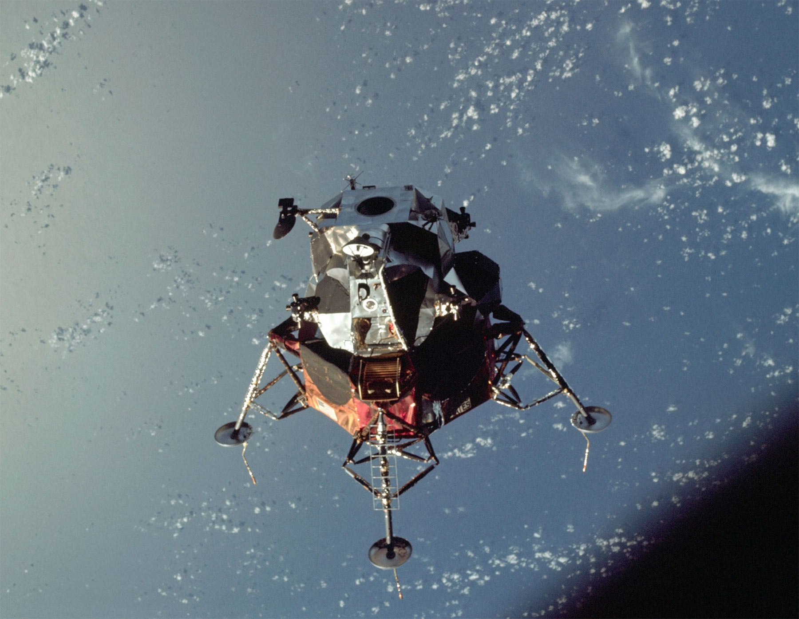

Apollo 9 was the first crewed flight to carry the Lunar Module, the spacecraft designed to land astronauts on the Moon. Launched on March 3, 1969, the mission remained in Earth orbit and focused on testing the Lunar Module under realistic operating conditions. The crew consisted of Commander James McDivitt, Command Module Pilot David Scott, and Lunar Module Pilot Russell Schweickart.
Although Apollo 9 never left Earth's orbit, it was one of the most important preparation missions in the Apollo program. The mission would determine whether the Lunar Module was ready for use during future lunar landings.
Shortly after reaching orbit, the crew began inspecting the Lunar Module, nicknamed Spider. For the first time, astronauts entered and operated the spacecraft in space.
The crew tested communication systems, electrical systems, life-support equipment, and navigation controls. Engineers closely monitored every aspect of the mission because the Lunar Module would be essential for landing astronauts on the Moon.
One of Apollo 9's most important objectives was demonstrating that the Lunar Module could separate from the Command Module and operate independently.
McDivitt and Schweickart entered Spider and undocked from the Command Module while David Scott remained aboard the Command Module, Gumdrop. The two spacecraft maneuvered independently in orbit, proving that astronauts could fly the Lunar Module separately and later rendezvous for docking.
The crew also tested the Lunar Module's descent and ascent engines, which would later be responsible for landing astronauts on the Moon and returning them to lunar orbit.
Russell Schweickart conducted a spacewalk to test equipment and procedures that would later be used during lunar missions. He moved outside the spacecraft while connected to life-support systems and demonstrated that astronauts could safely operate outside their vehicles.
The activities provided valuable information about astronaut mobility and equipment performance in the vacuum of space.
Apollo 9 successfully demonstrated that the Lunar Module was capable of performing its intended role. Every major objective was achieved, and the spacecraft proved itself ready for more demanding missions.
The success of Apollo 9 cleared the way for Apollo 10, which would test the Lunar Module in lunar orbit, and ultimately Apollo 11, which would use the spacecraft to achieve the first Moon landing.